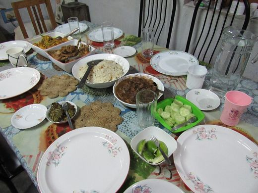

Search your photos the way you talk, in English, Tagalog, or Taglish.
About the screen illustrations. The screens in this manual are faithful redrawings of KitaKo 1.0.0 in its default light theme, built from the app's own layout and colours. Your photos, dates and counts will differ. Numbered markers 1 sit beside each screen with a line pointing to the exact element, and match the numbered notes next to it.
Most gallery apps make you scroll. With KitaKo, you just describe the photo, the way you'd describe it to a friend: sunset sa beach, aso ko sa bahay, group photo ng barkada. KitaKo finds the matches by meaning, not by file names or tags.
Mixed Tagalog–English, texting shortcuts like d p or kc, and everyday slang are cleaned up before the search runs.
Pick a picture or take a new one, and KitaKo shows the photos in your gallery that look most like it.
All the AI runs on your phone. No account, no internet connection, no upload.
KitaKo never copies, moves or sends your photos. It keeps only a private search index on the device.
| Item | Details |
|---|---|
| Phone | An Android phone. KitaKo 1.0.0 is distributed as an Android APK, and the app runs in portrait orientation only. |
| Free storage | About 1.5 GB. The app bundles its AI models (roughly 650 MB) and unpacks them once on first launch. |
| Memory | 4 GB of RAM or more is recommended. The image model is large, and indexing a big gallery takes a lot of memory. |
| Internet | Only to download the APK. After installation, KitaKo works fully offline. |
Only install KitaKo from the official QR code or the project repository. APKs from other sources may have been modified.
The first launch takes you through three short screens, each shown only once: permissions, the license agreement, and preparing your library. After that, KitaKo opens straight to your gallery.
KitaKo needs the following permissions to work. Your photos never leave your device.
Next comes the End User License Agreement. It explains in plain terms how KitaKo handles your data. Section 3, Privacy and Data Handling, is the key part: everything is processed on the device, and nothing is collected or sent anywhere.
Before KitaKo can search, it has to "look at" every photo once and save a compact description of each one, called an index. You'll see this progress screen while it works.
| You see | What it means |
|---|---|
| Preparing / Extracting models… This only happens once. | The AI models are being unpacked onto your phone. Very first launch only. |
| Loading AI models… | The search models are starting up. |
| Scanning your gallery… | KitaKo is finding the photos on your device. |
| Organizing your photos · 120 / 840 | Photos are being indexed. The numbers show progress. |
| Picking up where we left off… | The saved index is being reused, so only new photos need work. |
| Saving your photo index… | Progress is saved, so the next launch is fast. |
You don't have to wait. KitaKo opens your gallery as soon as your photos are found, then keeps indexing in the background. A thin Indexing photos… bar on the Home screen shows that it's still working. Photos that aren't indexed yet won't appear in search results until they are.
If setup is interrupted, for example by No images found or an amber Retry / Skip message, see Section 10, Troubleshooting.
Home shows your whole photo library, newest first. It's where you start every search.
Pinch on the gallery to change how many photos fit across the screen, from 2 (large) to 6 (small). KitaKo remembers your choice. You can also set it in Settings → Appearance → Gallery columns.
A slim blue banner reading Indexing photos… sits at the top of the gallery with a progress line. You can browse and search while it runs; new photos join the results as they finish. If a batch fails, the banner offers Retry and Skip.
To leave KitaKo from Home, press Back twice. The first press shows "Press back again to exit".
When a photo is easier to show than to describe, use it as the search. KitaKo finds the pictures in your gallery that look most similar: same place, same kind of scene, the same pet.
Long-press any photo in the gallery. KitaKo shows "Finding similar images…" and opens the matches.
While viewing a photo, tap the blue Find Similar button (Section 08).
Photo search compares how pictures look, not who is in them. A photo of your dog finds other dog photos, and may also find similar-looking dogs.
Results are ranked from closest to furthest match. KitaKo doesn't show raw scores. A rank badge and a simple strength meter tell you how confident it is.
Tap any result to open it full-size. Use arrow_back to return to Search and refine your words.
Date Range. Set From and/or Until to keep only photos taken in that window, e.g. just last December's Christmas photos.
Relevance. Choose how strict KitaKo should be:
| Level | Shows |
|---|---|
| Off | Every result, regardless of score |
| Low | Results above a 20% match |
| Medium | Results above a 45% match |
| High | Only results above a 70% match |
Tap Apply Filters. Active filters appear as a strip above the results; tap Clear there, or Reset in the sheet, to remove them.
No results? Try different words, loosen the Relevance level, or tap Clear Filters. New Search takes you back to the search box.

Tap a photo anywhere in KitaKo (Home or Results) to open it here.
KitaKo is read-only. It never edits, moves, or deletes your photos. To delete or share a picture, use your phone's regular Gallery or Photos app.
Open Settings with the settings gear on Home or Search.
| Option | What it does |
|---|---|
| Re-index gallery | Shows how many photos are currently indexed (e.g. 840 photos indexed). New photos are added automatically each time you open KitaKo. |
| Embedding cache deleteClear | Deletes KitaKo's saved photo index to free up space. After you confirm Clear embedding cache?, your photos are re-indexed the next time it's needed, which takes as long as the first setup. Your actual photos are never touched. |
Version shows the installed release (1.0.0 · release). Include it when reporting a problem.
KitaKo has a secret theme. Tap the Dark mode switch quickly, over and over, and you'll find it. To go back to normal, set Gallery columns to 6 and tap Dark mode once more.
| Problem | Try this |
|---|---|
| "No images found" on startup | KitaKo can't see your photos. Open Android Settings → Apps → KitaKo → Permissions and allow Photos and videos, then reopen the app. Or tap Browse to choose the folder where your pictures are. |
| A photo I just took doesn't show up in search | New photos are indexed when KitaKo starts. Close and reopen the app, and wait for Indexing photos… to finish. Photos taken with Take a Photo inside KitaKo are indexed straight away. |
| Search returns nothing | Use different or simpler words that describe what's visible. Set Relevance to Off or Low, clear any date filters, or turn on Always show top results. |
| Results aren't quite right | Add detail: aso sa beach rather than aso. Switch Search mode to Accuracy. Or open a good result and use Find Similar. |
| Amber "Retry / Skip" message | Some photos couldn't be processed, often because the files are damaged or in an unusual format. Retry once; if it fails again, Skip. Everything else keeps working. |
| First setup is slow | That's normal for a big gallery. Every photo is analysed on your phone. Keep the app open and the phone charging. After that, only new photos are processed. |
| App closes during indexing | Your phone may be low on memory. Close other apps and reopen KitaKo; it continues from where it stopped (Picking up where we left off…). |
| "Take a Photo" doesn't work | Allow the Camera permission in Android Settings. If the message says the gallery save failed, the search still runs, but the picture may not be kept. |
| Models show "Missing" | The installation is incomplete. Uninstall KitaKo, then download and install the APK again. |
No. Once installed, everything runs on your phone, even in airplane mode.
Not in version 1.0.0. KitaKo searches by what a photo shows, such as group photo ng barkada, not by who is in it.
No. Only still photos are indexed.
No. Uninstalling removes only KitaKo and its private index. Your photos stay in your gallery.
To remove everything KitaKo has stored, clear the app's data in Android Settings, or uninstall it. The full terms are in the in-app End User License Agreement.
| To… | Do this |
|---|---|
| Search by description | Home → tap search bar → type → send |
| Search with an existing photo | Search → imagePhoto → Choose from Gallery |
| Search with a new photo | Search → imagePhoto → Take a Photo |
| Find look-alikes of a gallery photo | Press and hold the photo on Home |
| Find look-alikes of the photo you're viewing | Details → Find Similar |
| Rerun a past search | Search → Recent → tap the query |
| Narrow results by date or strictness | Results → tune → set → Apply Filters |
| Bigger or smaller thumbnails | Pinch the Home grid, or Settings → Gallery columns |
| Switch to dark theme | Settings → Appearance → Dark mode |
| Exit the app | Press Back twice on Home |
Mix these with English freely: sa (at/in) · ng (of) · may (with) · mga (plural) · aso dog · pusa cat · bahay house · kalsada street · palengke market · simbahan church · bundok mountain · dagat sea · gabi night · umaga morning · kumakain eating · naglalaro playing · barkada friends.
The photos used in the screen illustrations come from Wikimedia Commons and are used under the licences listed below. They are examples only and do not ship with the app.
Source code, releases and technical documentation:
github.com/Emyol/KitaKo_Codebase